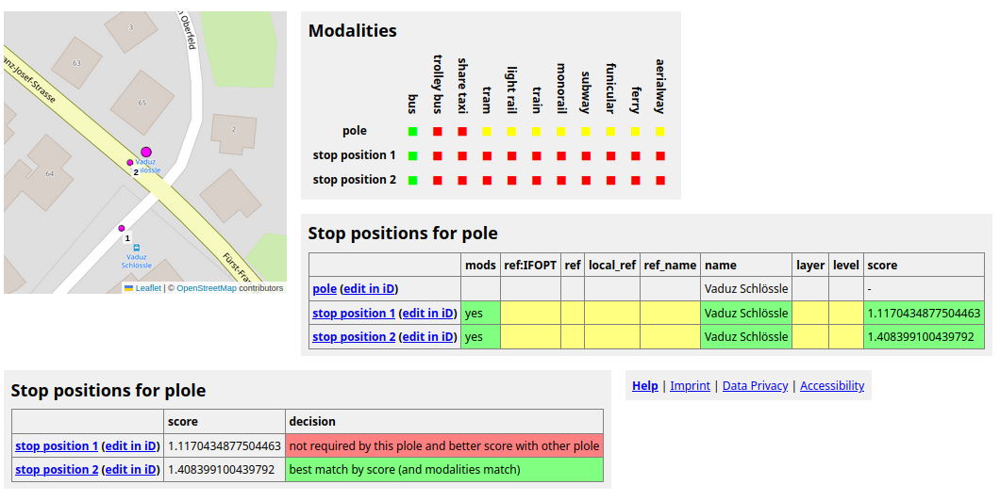
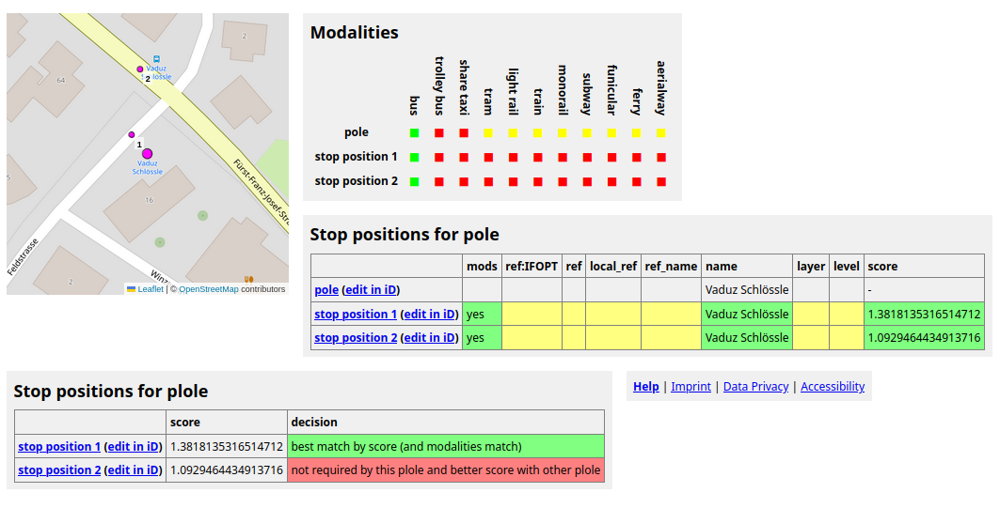
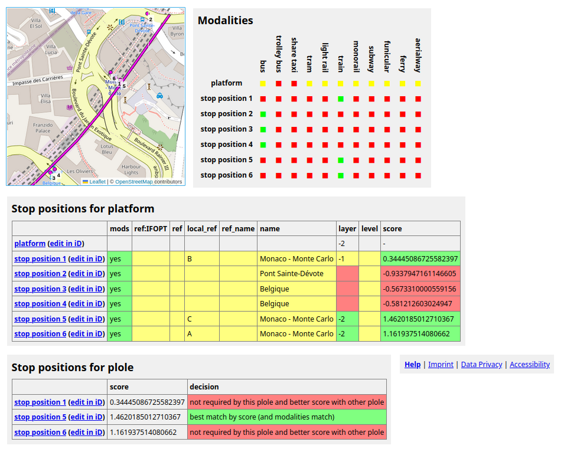
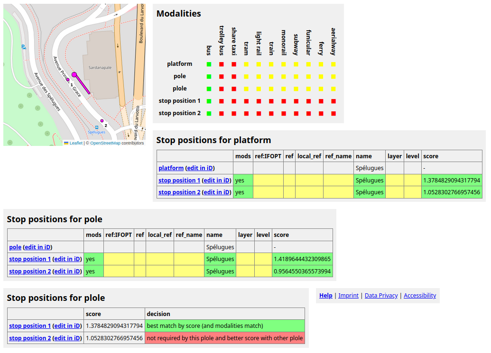
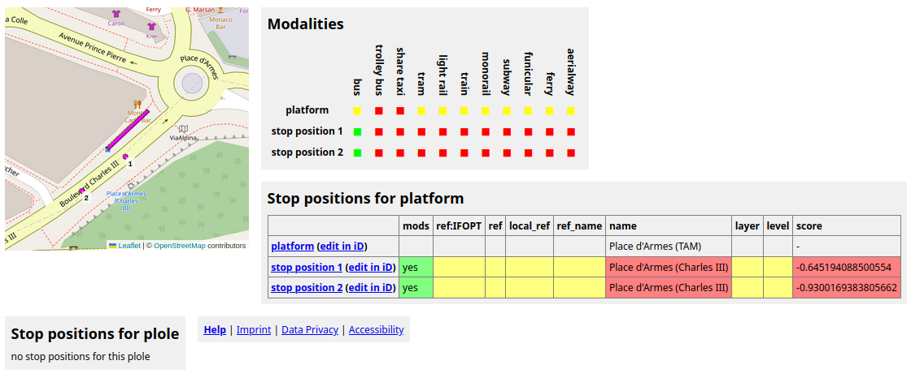

PTSA is an interactive map showing structure and properties of public transport stops in the OpenStreetMap data base. It's main pupose is to help finding tagging mistakes and inconsitencies in OSM.
Zooming in single points (each representing an abstract stop object) disperse into several OSM objects making up the stops. All objects belonging to one stop are surrounded by a line marking an abstract stop area (not to confuse with PTv2's stop areas). You can click each object and the surrounding stop area to get additional information.
If you click a stop area (not an object inside this area) you see a link 'Plole details'. In PTSA a plole is the waiting area for passengers. This may be a pole node or a plattform way/area or both together, depending on the stop's data in OSM.
The plole details page shows (almost) all information PTSA uses to determine which OSM objects belong to one and the same stop. This includes modalities supported by the objects, relevant tags, and scores computed by PTSA based on tags and distances.
In PTSA a stop has at most three objects: a stop position (where the vehicle stops), a pole (node where passengers should wait), a platform (way/area where passengers should wait). At least one of these objects has to exist.
Stops map with only one platform for several stop positions appear in PTSA as multiple stops (one stop per stop position). If there are several poles/platforms using a commen stop position, then PTSA generates as many stops as there are poles/platforms.


We see two stops, each consisting of a pole and a stop position. Both stop positions are sufficiently close to each pole to maybe belong to each pole. Both stop positions serve modalities compatible with both poles. Both poles and both stop positions have identical name tags. Other relevant tags are not available. Thus, the only criterion for score based matching is the distance of each stop position to each pole.
Both stop positions have positive score for both poles. Thus, in principle both stop positions could be related to each of the two poles. PTSA here assumes, that one stop position per pole is the standard. More than one stop position per pole is only considered relevant if there's another stop position not matching any other pole.


We are interested in the long south eastern platform. The details page shows that there are six stop positions closeby. The platform has public_transport=platform making it suitable for almost all modalities, but there's no definitve information about modalities served (thus, yellow squares in the table). All stop position modalities match the platform's modalities ('mods' column is green).
The platform has no name tag. Thus, PTSA cannot make decisions by name, but only by distance and layer tag. Three stop positions match the platform and stop position 5 has highest score. Although stop positions 1 and 6 match, too, they are best matches for other poles/platforms and are not assigned to the platform under consideration.
Note that layer=-1 does not lower (or increase) the score (yellow background), because layers in OSM are kind of rendering information and have only loose relation to reality (in contrast to level). For stop positions without any layer information score is decreased, because here there's some likelyhood that in reality the objects are on different levels.


Next to platform and pole modalities the modality table shows plole modalities, which are the intersection of platform and pole modalities. The correct stop position is chosen by distamce (because all names are identical). The stop position with smaller score has highest score for another plole and, thus, is not considered an addtional stop position for the plole under consideration here.


The platform obviously has a pole and a stop position, but PTSA does not combine them to a stop. The reason is that the platform has a different name tag and there are no other tags. This tagging mistake together with the fact that stop position 2 is relatively far away from poles and platform makes PTSA generate four stops instead of two. From PTSA's visualization we immediately see that something is wrong here. Investigating the details yields the underlying causes.